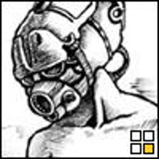

It is always the same black circle. It is always the same lonely longing for a non-existent ideal. A constant failure.
Be respectful, wanderer. For this is the graveyard of my dreams.
Share your dead stars with me: dwenmer[at]proton.me
Return